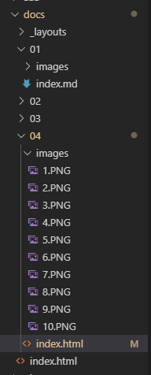
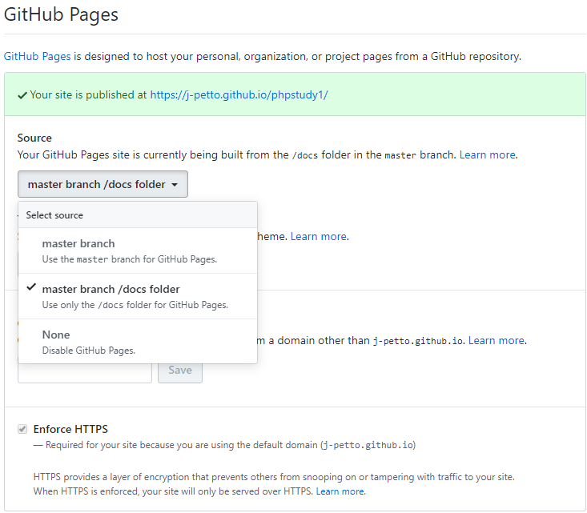
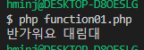
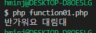
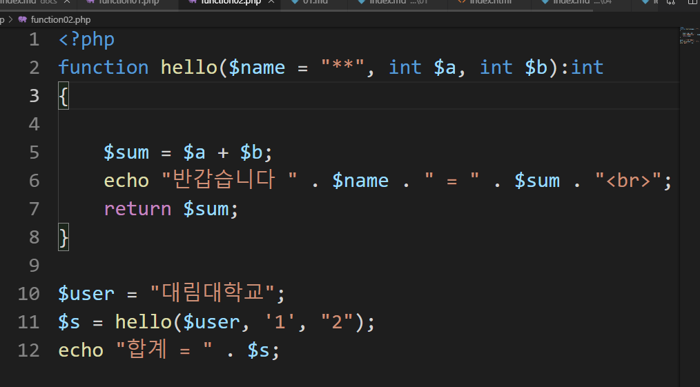
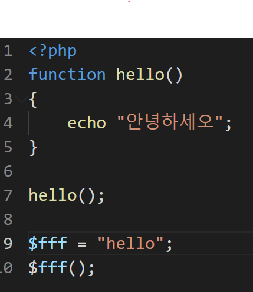
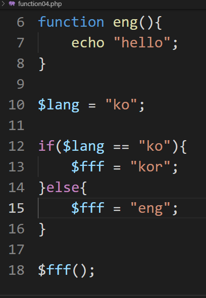

4주차 수업 2019.09.18
소스트리 다운 및 사용
https://www.sourcetreeapp.com에 들어가 소스트리를 다운 받는다.

로그인 후 커밋 할 파일을 스테이지에 올리고 커밋한 후 push버튼을 눌러 올린다.
git 홈페이지 제작
 
docs폴더를 제작 후 git에 들어가 setting --> GitHub Pages --> sorce를 master branch/docs folder로 바꿔준다.
그 후 레포트를 낼 홈페이지를 꾸며준다.
php 더 알아가기
 

function_exists --> hello라는 함수가 있는 가를 확인하는 함수

function hello($name = "**", int $a, int $b):int
{
$sum = $a + $b;
echo "반갑습니다." . $name . " = " . $sum;
return $sum;
}
$user = "대림대학교";
$s = hello($user,'1',"2"); -->hello 함수 호출 후 변수에 넣기
echo "합계 = " . $s; --> 함수를 넣은 변수 호출

hello에 안녕하세오라고 저장되어있어 안녕하세오가 뜬다.

lang에 ko가 들어있으면 kor이라는 함수를 넣고 호출